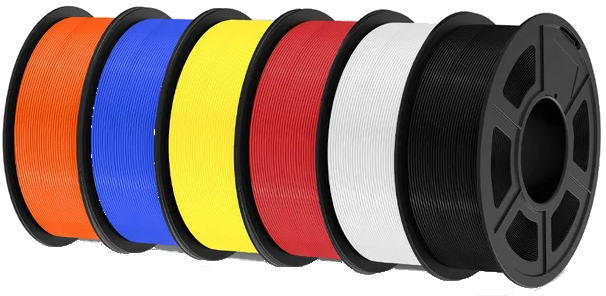

Thermoplaste (FDM-Druck)
Thermoplaste sind die am häufigsten verwendeten Materialien im FDM-Druck und eignen sich für Prototypen, funktionale Teile oder einfache Modelle:
- PLA (Polylactid): Umweltfreundlich, biologisch abbaubar, einfach zu drucken, geringe Hitzebeständigkeit. Ideal für dekorative Objekte und Prototypen.
- ABS (Acrylnitril-Butadien-Styrol): Robust, hitzebeständig und schlagfest, jedoch schwieriger zu drucken (benötigt beheiztes Druckbett). Häufig in technischen Anwendungen genutzt.
- PETG (Polyethylenterephthalat-Glykol): Kombiniert die Festigkeit von ABS mit der Druckfreundlichkeit von PLA. Lebensmittelecht und chemikalienresistent.
- TPU/TPE (Thermoplastische Elastomere): Flexibel, gummiartig, ideal für bewegliche oder stoßdämpfende Teile wie Dichtungen oder Handyhüllen.
- Nylon (Polyamid): Stark, leicht und abriebfest, jedoch hygroskopisch (zieht Feuchtigkeit an). Wird oft in technischen Anwendungen eingesetzt.